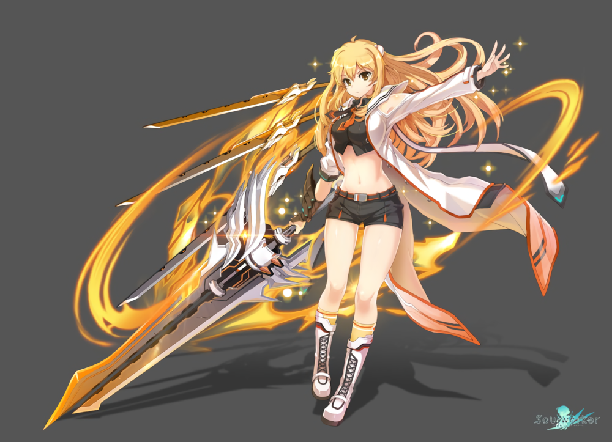
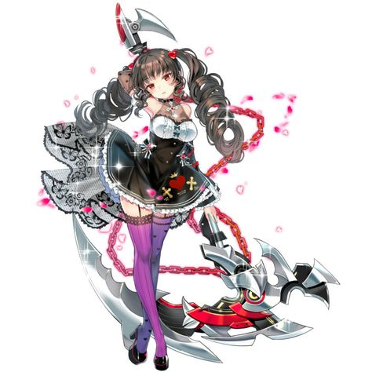
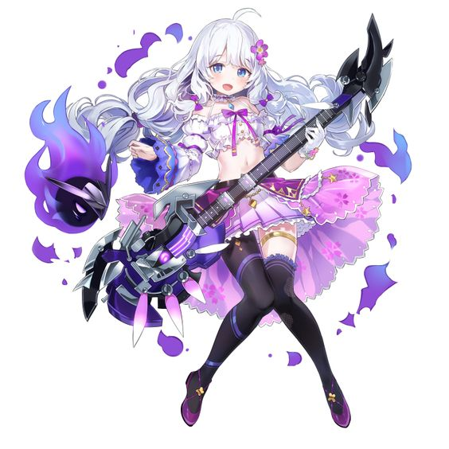
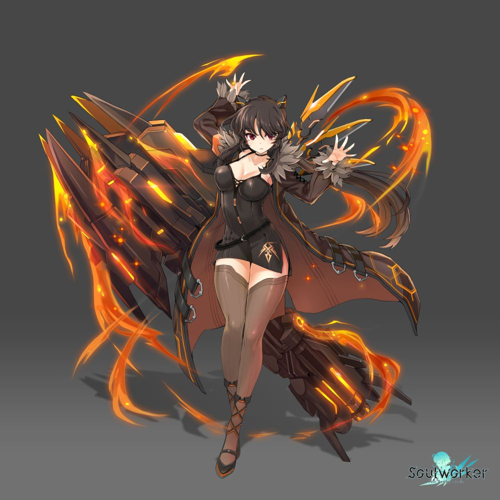
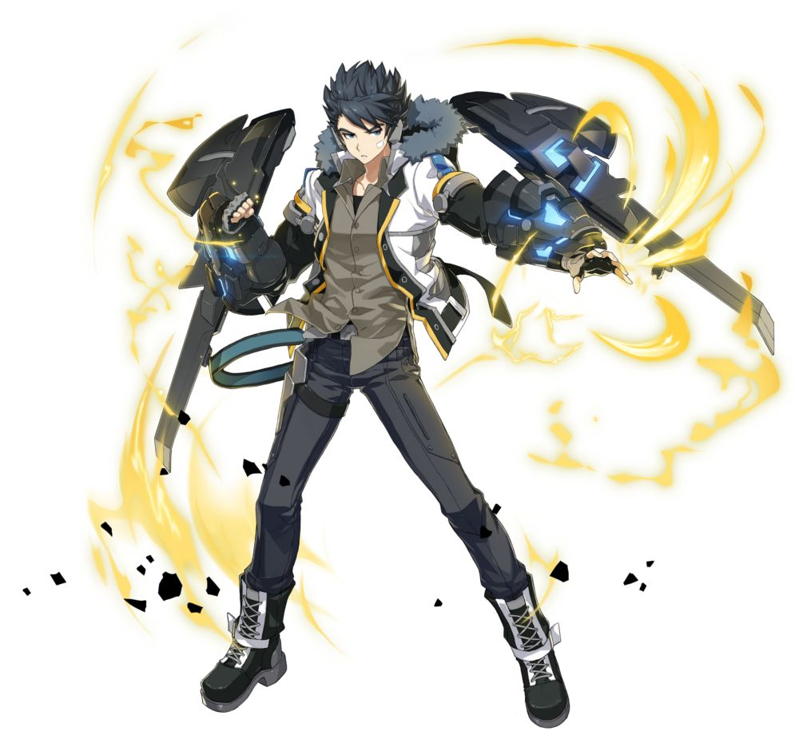
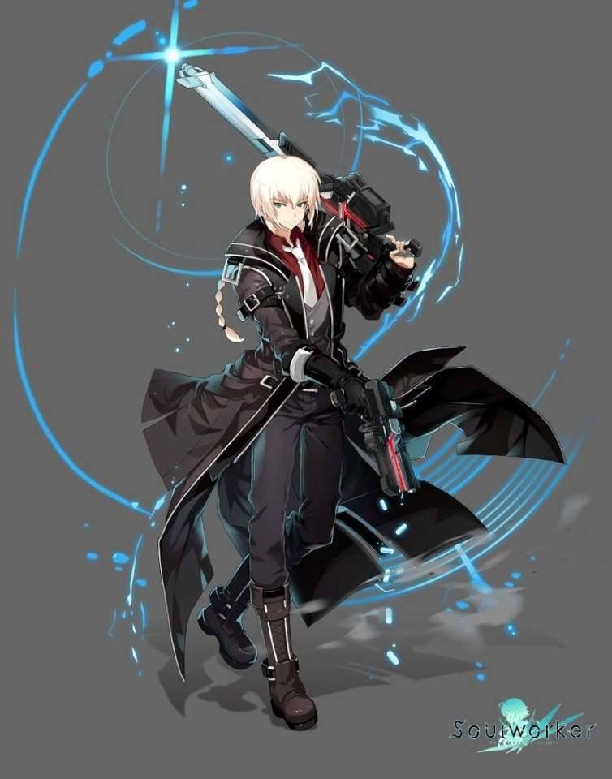

Haru Estia
La afectuosa Haru perdió todo lo que quería en este mundo. Aunque parezca tímida y miedosa, en ella arde una poderosa llama alimentada por su sed de venganza. Su alma formó la noble pero mortífera Espada ánima, que a su vez se ha convertido en una compañera fiel a su sensata dueña.
Lilly Bloommerchen
A Lilly le gusta provocar y siempre tiene una contestación a mano. Cuando los demonios del Vacío atacaron el mundo, mataron a su único amigo. Este suceso desencadenó la locura de Lilly y su alma se manifestó en forma de una letal Guadaña bruma. Desde ese momento, la joven lucha contra la crueldad del mundo por sus propios medios; cuanto más brutales, mejor.
Stella Unibell
La benjamina de los SoulWorker es tan vulnerable como adorable. Stella es una niña marcada cuya alma se desgañita a través de su Kitara aullante. Los acordes desgarradores que toca anuncian el fin del enemigo. En el instrumento habitan demonios benévolos que defenderán a Stella hasta el final.
Iris Yuma
Iris es una tormenta de ira y aflicción desde que el Gran Vacío le arrebató la vida a su familia. Estos sentimientos se materializan en combate a través de su arma, la Plaszuca. Iris derriba a sus enemigos con increíble precisión y una potencia destructiva. Ni ella ni su cañón conocen la piedad.
Jin Seipatsu
El potente luchador de artes marciales lo da todo por proteger a los débiles. Se abre paso entre las injusticias del mundo boxeando con sus útiles armas para los puños, los Combocometas. Pero una gran culpa le corroe, pues un oscuro día tuvo lugar una tragedia que causó la muerte de muchos inocentes.
Erwin Arclight
Gracias a su encanto natural, Erwin es un auténtico rompecorazones. A su inquebrantable confianza en sí mismo solo le hace sombra su extraordinaria curiosidad. Esta antigua estrella de televisión no tiene miedo a nada. Con una sonrisa traviesa en la cara y sus dos Meteorrevólveres le planta cara a cualquier peligro.